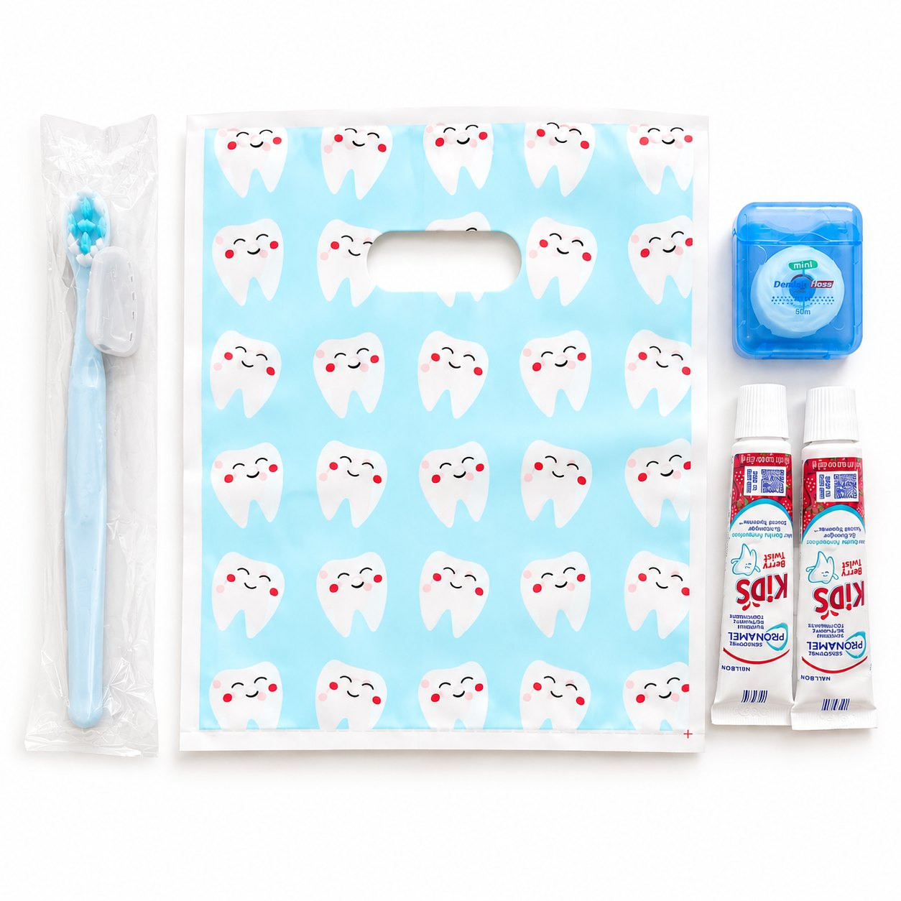
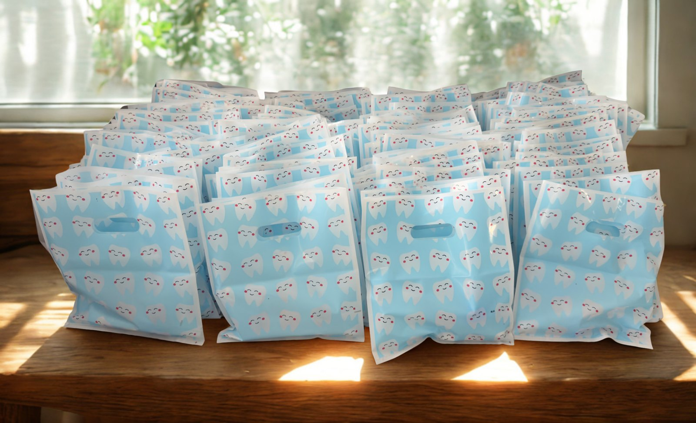
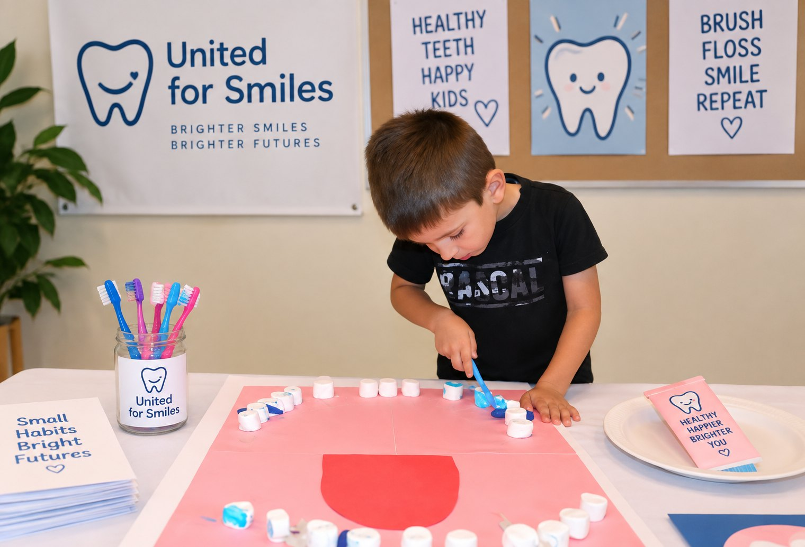
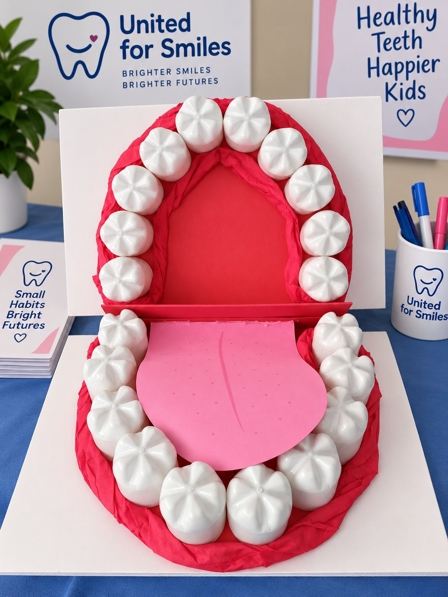
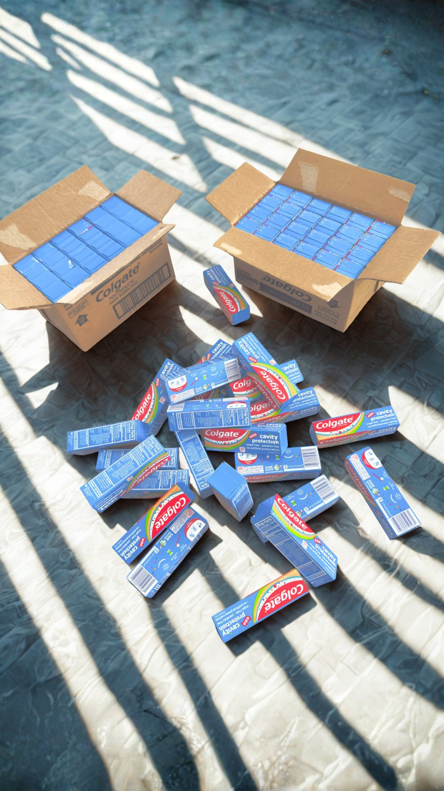
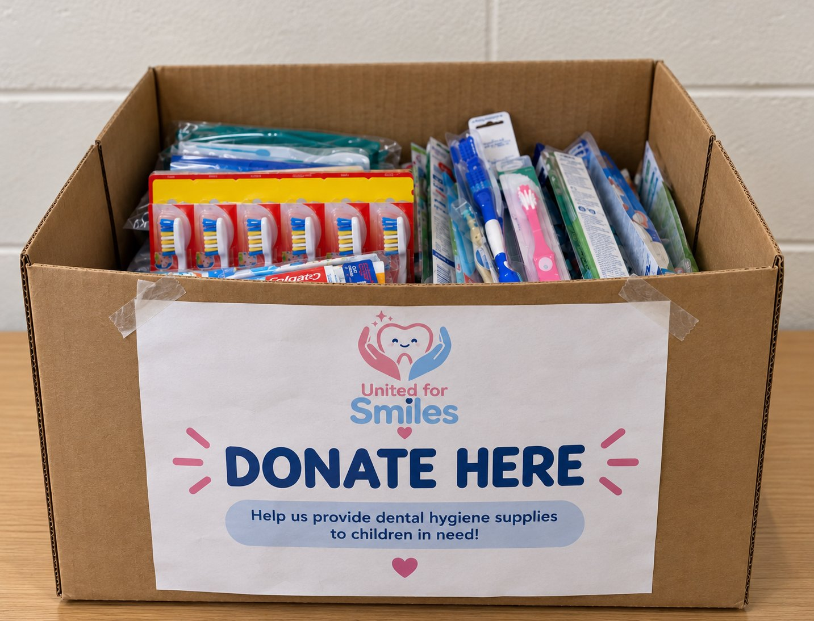

What we do
Programs & Projects
A look at our work in the field — the kits we pack, the classrooms we visit, and the communities that make it possible.


Hygiene Kit Distribution
Our core program. We purchase toothbrushes, toothpaste, floss, picks, and mouthwash in bulk, assemble complete kits for about $10 each, and deliver them directly to children and families who need them most.
B.R.I.G.H.T. Program
Building Routines In Good Hygiene Together
Our early childhood oral health education program. We visit Head Start programs and preschools in underserved communities to teach children proper brushing, healthy food choices, and regular dental visits through hands-on games, demonstrations, and activities.




Community Supply Drives
We partner with local schools and clubs to run drives collecting new, sealed dental supplies. Participating students earn verified community service hours based on the quantity and value of items donated — and every item collected goes straight into a kit.